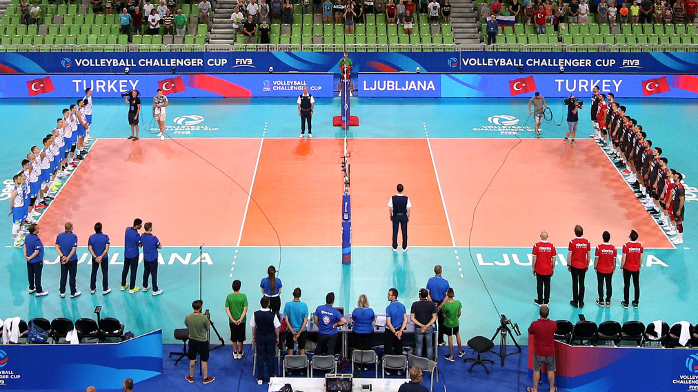
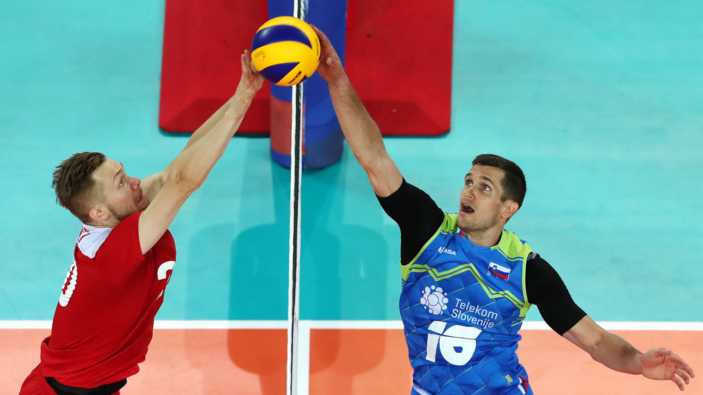
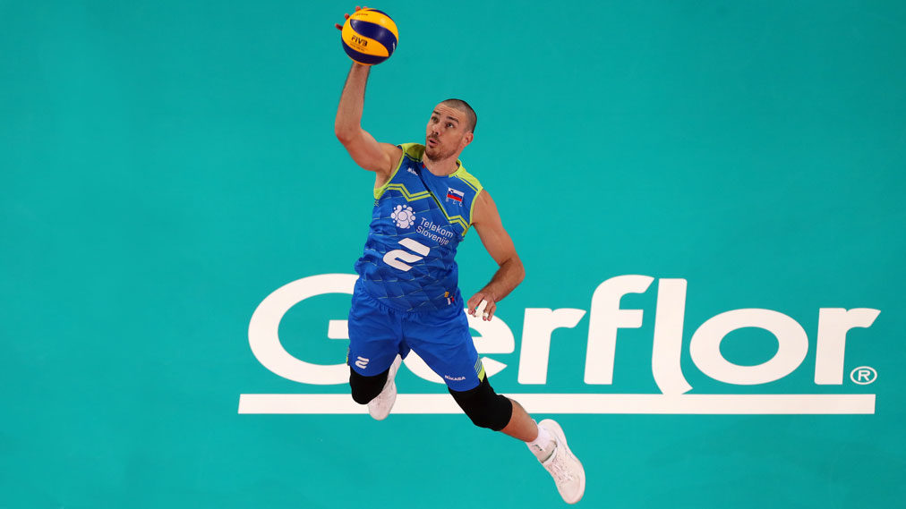

Odbojka je moštveni šport oziroma ekipna (olimpijska) športna panoga. Olimpijski panogi sta dvoranska odbojka in odbojka na mivki, paraolimpijska panoga pa je sedeča odbojka. Tako kot vsak šport ima tudi odbojka nekaj osnovnih pravil – tokrat se bomo osredotočili predvsem na pravila dvoranske odbojke.
Igralci
Pri odbojki igrata med seboj dve ekipi. Vsaka ekipa šteje šest igralcev (pri odbojki na mivki sta v vsaki ekipi po dva igralca, pri mini odbojki po trije igralci, pri mali odbojki pa po štirje igralci v vsaki ekipi). Obe ekipi loči mreža. Namen igre odbojke je spraviti žogo preko mreže tako, da bi v nasprotnikovem polju padla na tla, hkrati pa preprečiti, da žoga pade na tla na lastni strani igrišča. Odbojka je edinstvena igra, ki od igralcev zahteva, da ohranijo žogo čim dlje v zraku.
Način igre in točkovanje
Igralci lahko med igro odbojke uporabljajo katerikoli del telesa, le žoge ne smejo nositi. Prav tako se igralec ne sme dotakniti žoge dvakrat zaporedoma. Med igro se sme vsaka ekipa največ trikrat dotakniti žoge, s tretjim dotikom pa mora žogo usmeriti preko mreže v nasprotnikovo polje. Ekipa dobi točko, če se žoga dotakne tal na nasprotnikovem igrišču, če pade izven igrišča ali če je nasprotna ekipa ne uspe pravilno odbiti. Kadar ekipa dobi točko, ima tudi pravico do serviranja. Ko ena ekipa zbere 25 točk in ima najmanj 2 točki prednosti, pomeni, da je dobila niz. Če sta ekipi izenačeni, se igra na razliko dveh točk. Za zmago na tekmi mora ekipa osvojiti tri nize. Kadar je rezultat v nizih izenačen, se igra na 3 dobljene nize, pri čemer se peti niz igra do 15 točk. Po vsakem nizu ekipi zamenjata stran, posebnost je le peti niz, pri katerem ekipi strani zamenjata, ko ena ekipa osvoji osem točk.
Igrišče za odbojko in igralni pogoji
Igralno področje obsega igrišče in prosto območje okoli igrišča. Igrišče je pravokotnik, ki meri 18 x 9 m in je obkrožen s simetričnim pravokotnim prostim območjem. Igrišče za odbojko označujeta dve stranski in dve zadnji črti. Sprednji del vsake polovice igrišča omejuje os središčne črte in črta napada 3 m od te osi. Prostor za serviranje se razteza za zadnjo 9-metrsko črto, ob straneh pa je omejen še z dvema kratkima črtama. V globino sega prostor za serviranja do konca prostega območja, ki je širok najmanj 3 metre. Omejen je tudi prostor za menjave, izven prostega območja pa se nahaja še prostor za ogrevanje. Najmanj 7 m nad igralnim področjem ne sme biti nobenih ovir. Odbojko je prepovedano igrati na hrapavih ali spolzkih površinah, saj igrišče ne sme biti nevarno za morebitne poškodbe igralcev. Igralna površina mora biti gladka, ravna, iz enakih materialov. Na svetovnih in uradnih tekmovanjih FIVB temperatura na igrišču ne sme biti nižja od 16 stopinj Celzija in ne višja od 25 stopinj Celzija. Predpisana je tudi osvetljenost igralnega področja.
Mreža in žoga za odbojko
Mreža za odbojko je dolga 9,5 m in široka 1 m. Sestavljajo jo 10-centimetrski črni mrežasti kvadrati. Na vrhu je vodoraven bel trak, širok 5 cm. Nad vsako stransko črto sta navpično pritrjena še dva bela, 5 cm široka trakova, ki sta sestavni del mreže. Višina mreže je 2,43 m za moško odbojko in 2,24 m za žensko odbojko. Drogova, ki sta v oporo mreži, morata biti okrogla in gladka, visoka 2,55 m.
Žoga za odbojko je okrogla, iz prožnega usnja, z notranjim delom iz gume. Žoga za odbojko meri v obsegu 65–67 cm in je lahko težka od 260–280 gramov. Vse žoge, uporabljene na tekmi, morajo imeti enake značilnosti, vedno pa je treba uporabljati tri žoge.
Osnovna oprema za igralce odbojke
Opremo igralcev sestavljajo majica, hlačke in športna obutev. Obutev mora biti lahka in upogljiva, z gumijastimi ali usnjenimi podplati. Majice igralcev morajo biti v isti barvi za vse člane ekipe, z izjemo prostega igralca (libero), ki ima dres v kontrastni barvi, in oštevilčene od 1 do vključno 18. Številka mora biti nameščena spredaj in zadaj na sredini majice. Če se zgodi, da prideta dve ekipi na tekmo v istih barvah majic, se mora preobleči domača ekipa. Na nevtralnem igrišču pa se mora preobleči tista ekipa, ki je na tekmovalnem programu napisana prva.
Vse se začne z dobrim servisom!
Drugi ključni elementi odbojke so še sprejem, zgornji in spodnji odboj žoge, podaja, napad, blok in obramba.
Napadalni udarec je tehnično težji odbojkarski element. Vse akcije z namenom poslati žogo proti nasprotniku, razen servisa in bloka, veljajo za napadalne udarce.
Blok je tehnični element obrambe in hkrati napada, s katerim se nad višino mreže zaustavlja žoga, ki jo nasprotnik usmeri v obrambno igralno polje. Blokiranje je akcija igralcev v bližini mreže, da bi prestregli žogo, ki prihaja od nasprotnika in pri tem sežejo nad višino zgornjega roba mreže. Blok lahko izvajajo le igralci iz prve vrste. Kolektivni blok izvajata dva ali trije igralci drug ob drugem in je zaključen, ko se eden izmed njih dotakne žoge.
